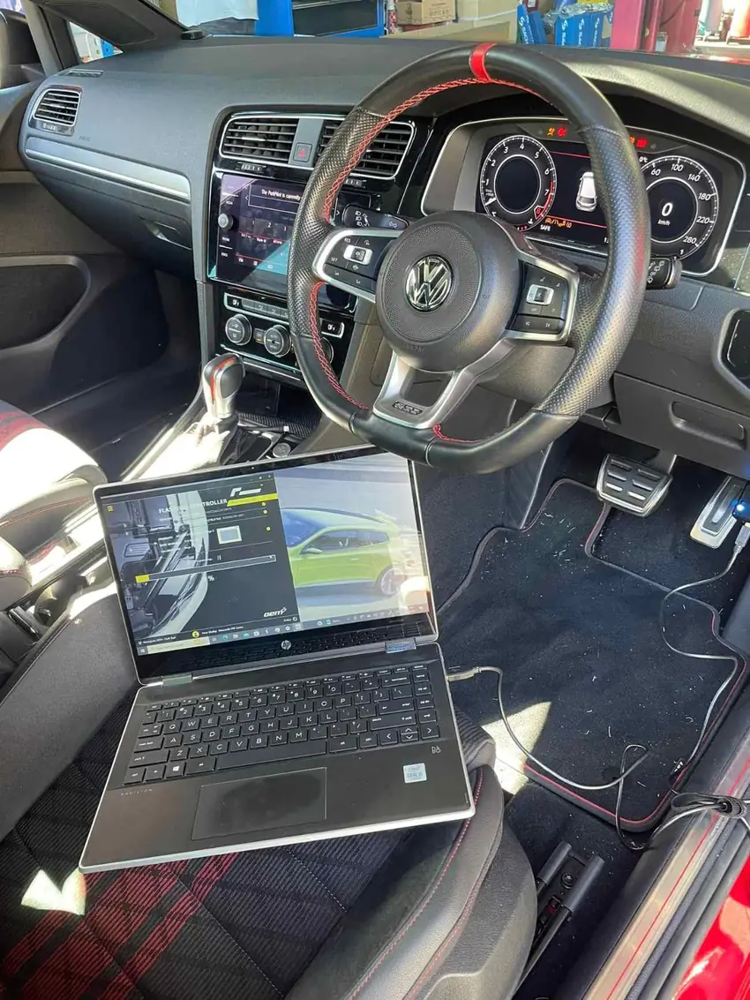

Logbook servicing
Scheduled servicing to your car’s logbook, using the correct oils and parts for your model, with the book stamped when we’re done.
- Minor & major services
- Oil and filter changes
- Air and cabin filters
- Pre-trip and pre-purchase checks
Everything your Volkswagen, Audi, Skoda or Porsche needs between new tyres and new tunes — from the logbook service to the fault nobody else could find.
Scheduled servicing to your car’s logbook, using the correct oils and parts for your model, with the book stamped when we’re done.
We plug in, read the stored fault codes and explain what they actually mean — then fix the cause, not just clear the light.

From timing belts to water pumps and rear main seals — the jobs VW Group engines need over their life.
Pads, rotors, fluid and ABS sensors for everyday driving — plus big brake kits for performance builds.
Clunks, wandering and worn components sorted, from bushes to full coilover setups.
Servicing and repairs for manual and DSG gearboxes, and 4MOTION / quattro drivetrains.
Need a VW Group part? Call us — we can often supply it, or supply and fit it the same day.
Tap a warning light to see what it usually means and how urgent it is. When in doubt, call us — we’ll read the actual fault code.
General guide only — always follow your owner’s manual. Symbols vary slightly between models.